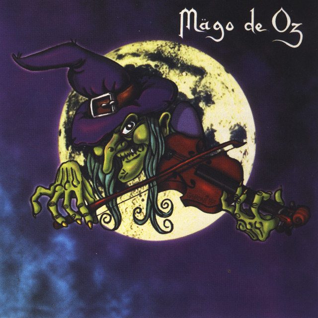
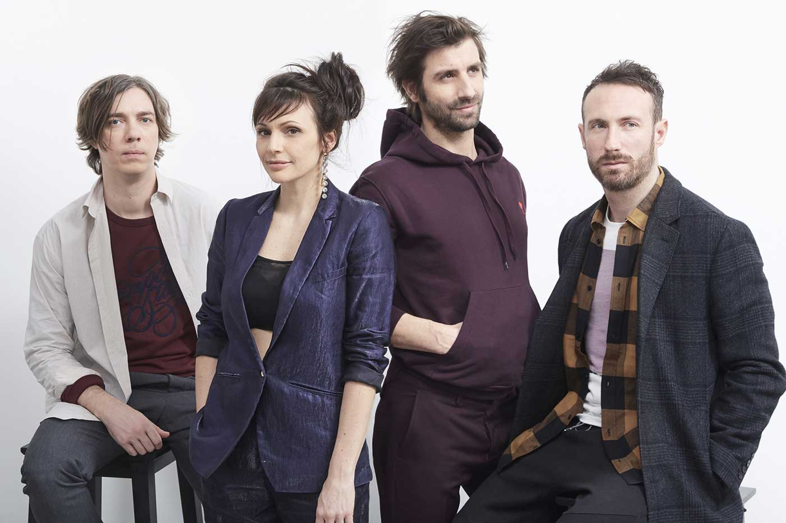
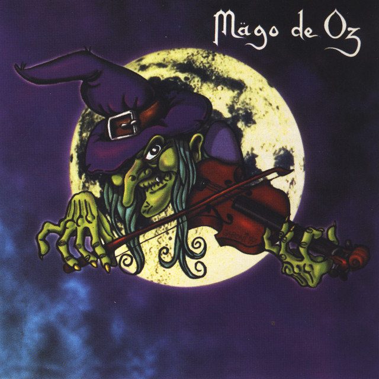
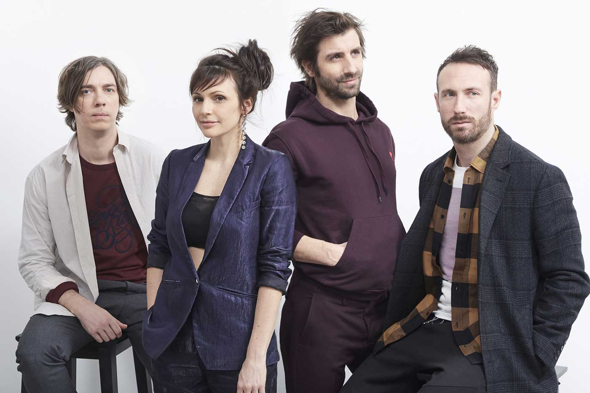
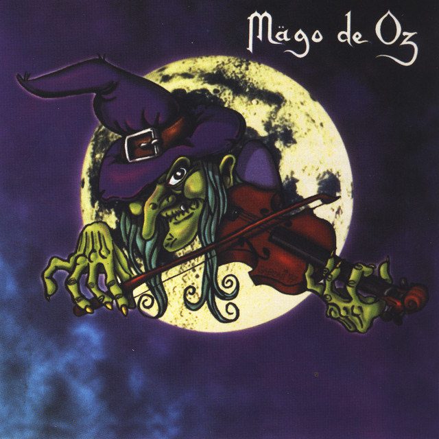
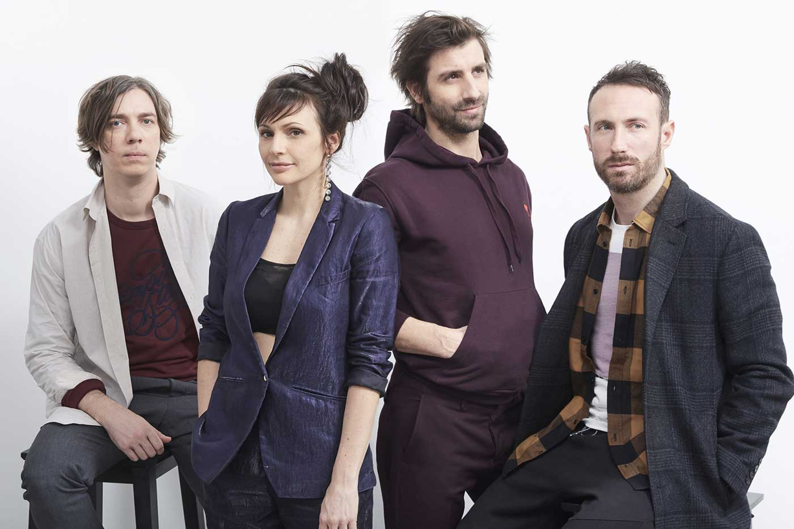

La música, «el arte de las musas» es, según la definición tradicional del término, el arte de crear y organizar sonidos y silencios respetando los principios fundamentales de la melodía, la armonía y el ritmo, mediante la intervención de complejos procesos psicoanímicos. El concepto de música ha ido evolucionando desde su origen en la Antigua Grecia, en que se reunía sin distinción a la poesía, la música y la danza como arte unitario. Desde hace varias décadas se ha vuelto más compleja la definición de qué es y qué no es la música, ya que destacados compositores en el marco de diversas experiencias artísticas fronterizas han realizado obras que, si bien podrían considerarse musicales, expanden los límites de la definición de este arte. (Wikipedia)
En la industria musical, un artista discográfico es una persona que interpreta canciones en un estudio con el fin de grabarlas y lanzarlas al público. Un artista discográfico puede ser un solo individuo, una banda o incluso una gran sinfonía. También puede ser un cantautor.
Mis gustos musicales son muy variados y han ido creciendo a medida que pasa el tiempo. Algunos de los artistas que solía escuchar cuando empecé con la música todavía me encantan e incluso los sigo escuchando hasta el día de hoy.
| Banda/Grupo/Artista | Canciones famosas | Origen | Album(s) popular(es) |
|---|---|---|---|
| Cuarteto de Nos | Lo malo de ser bueno, Miguel Gritar y Cinturon Gris | Uruguay | Porfiado, Raro y Bipolar |
| Mago de Oz | Fiesta Pagana, La posada de los muertos y Xanandra | España | Finisterra, Gaia y Ilussia |
| Caravan Palace | Lone Digger, Mirrors y MAD | Francia | "<|°_°|>", Panic |
| S3RL | Dopamine, Punch the Gas y Waifu | Australia | Remastered |
| Zutomayo | Study me, Kira Killer y Darkern | Japon | Jinkougaku, Gusare y 潜潜話 |

